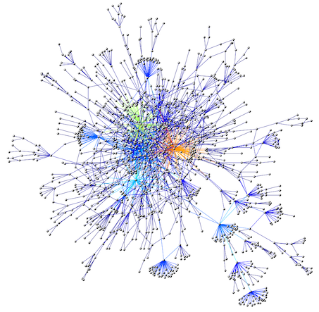

Welcome
My group develops theoretical and computational models to understand (1) the origin of technological innovation and (2) the societal impact of information technologies. In the short term, models are used for the successful development of technological systems. In the long term, the integration of engineering and knowledge will enable us to understand the design principles and dynamics of living systems and apply these principles to engineer new cellular behaviour.

I am a complexity scientist and full-time lecturer at the degree of Biomedical Engineering and Human Biology at the Universitat Pompeu Fabra (UPF) and member of the Complex Systems Lab since 1998. My speciality is complex systems and complex networks. I am interested in using complex networks to solve problems in biomedical sciences. Although we focus in specific systems (read more ), our computational methods have wide applicability. Network science allows for (1) analysis of experimental results, (2) comparison between real and simulated systems, (3) quantifying the degree of uncertainty in models and (4) improving data collection methods.